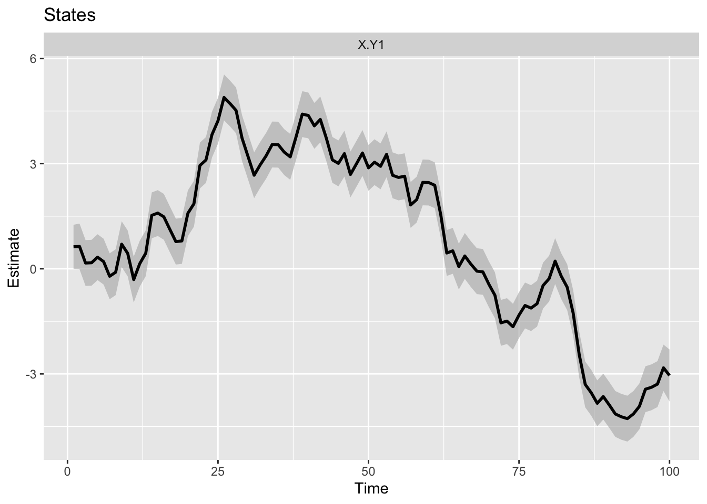

Part 2. Examples
Here a series of short examples are shown for different types of models specified in MARSS structure. Output is shown briefly.
The MARSS model has the form: \(\mathbf{x}\) on the left are the hidden states. The \(\mathbf{y}\) on the left are the observed data. Missing values are allowed in \(\mathbf{y}\). The \(\mathbf{c}\) and \(\mathbf{d}\) are inputs (not estimated). Bolded capitalized values on the right are parameters and 2D (or 3D if time-varying) matrices. Parameters can be estimated, constrained or fixed at a specific value. Within a parameter matrix, you can have a combination of estimated, constrained (shared), or fixed values. The \(\mathbf{u}\) and \(\mathbf{a}\) are parameter column-matrices and can be similarly estimated, constrained or fixed. \(\mathbf{w}\) and \(\mathbf{v}\) are the errors and are computed values, after parameters are estimated.
5.1.1 Output
This is a brief summary of outputs. The output are shown with the following simple fit:
dat <- cumsum(rnorm(100,0,0.5)) + rnorm(100,0,0.5)
fit <- MARSS(dat)Use the broom package to get the model output in tidy form. The confidence intervals shown are approximate and based on the estimated Hessian matrix. See ?tidy.marssMLE for information on how to change to a different type of confidence interval.
broom::tidy(fit) term estimate std.error conf.low conf.up
1 R.R 0.20232993 0.07256917 0.06009696 0.34456290
2 U.U -0.03710875 0.05988268 -0.15447663 0.08025914
3 Q.Q 0.35208044 0.10659375 0.14316053 0.56100035
4 x0.x0 0.66568193 0.70913982 -0.72420657 2.05557043The get the estimated states use:
head(stats::tsSmooth(fit, type="xtT")) .rownames t .estimate .se
1 X.Y1 1 0.6287215 0.3194423
2 X.Y1 2 0.6361536 0.3325886
3 X.Y1 3 0.1632734 0.3336694
4 X.Y1 4 0.1711874 0.3337600
5 X.Y1 5 0.3302335 0.3337676
6 X.Y1 6 0.2024342 0.3337682Note that generic rownames were given since none were specified for dat.
You can also get all the Kalman filter and smoother estimates for \(x\) from MARSSkf(). See ?MARSSkf.
There are two types of fitted values that are used in the state-space literature: the one-step-ahead which uses on the data up to \(t-1\) and the smoothed fitted values which uses all the data. Read up on fitted values for MARSS models at ?fitted.marssMLE.
To get the fitted values, the estimated \(y\), using all the data:
head(fitted(fit, type="ytT")) .rownames t y .fitted
1 Y1 1 0.60321037 0.6287215
2 Y1 2 0.91217455 0.6361536
3 Y1 3 -0.11302441 0.1632734
4 Y1 4 0.08433636 0.1711874
5 Y1 5 0.49507490 0.3302335
6 Y1 6 0.36857168 0.2024342To get the fitted values, the estimated \(y\), using the data up to time \(t-1\):
head(fitted(fit, type="ytt1")) .rownames t y .fitted
1 Y1 1 0.60321037 0.6285732
2 Y1 2 0.91217455 0.5753577
3 Y1 3 -0.11302441 0.7752737
4 Y1 4 0.08433636 0.1078043
5 Y1 5 0.49507490 0.0540304
6 Y1 6 0.36857168 0.3301366Note, this is the default for fitted(fit).
To make some generic plots and diagnostic plots, you can use autoplot() in the ggplot2 package:
ggplot2::autoplot(fit, plot.type = "xtT")
To get residuals, use:
residuals(fit) type .rownames name t value .fitted .resids .sigma
1 ytt1 Y1 model 1 0.60321037 0.62857318 -0.025362815 0.7445874
2 ytt1 Y1 model 2 0.91217455 0.57535768 0.336816865 0.8263781
3 ytt1 Y1 model 3 -0.11302441 0.77527365 -0.888298063 0.8347419
4 ytt1 Y1 model 4 0.08433636 0.10780433 -0.023467967 0.8354575
5 ytt1 Y1 model 5 0.49507490 0.05403040 0.441044493 0.8355177
6 ytt1 Y1 model 6 0.36857168 0.33013661 0.038435072 0.8355228
7 ytt1 Y1 model 7 -0.52050972 0.32032329 -0.840833007 0.8355232
8 ytt1 Y1 model 8 -0.49182837 -0.31391996 -0.177908413 0.8355232
9 ytt1 Y1 model 9 1.31105615 -0.47737395 1.788430098 0.8355232
10 ytt1 Y1 model 10 0.71684417 0.75560700 -0.038762830 0.8355232
11 ytt1 Y1 model 11 -0.99878849 0.69097005 -1.689758542 0.8355232
12 ytt1 Y1 model 12 0.23275826 -0.54615480 0.778913068 0.8355232
13 ytt1 Y1 model 13 -0.00390208 -0.03010273 0.026200648 0.8355232
14 ytt1 Y1 model 14 2.10613518 -0.04860456 2.154739739 0.8355232
15 ytt1 Y1 model 15 1.68812157 1.44451858 0.243602995 0.8355232
16 ytt1 Y1 model 16 1.62559746 1.58040941 0.045188054 0.8355232
17 ytt1 Y1 model 17 1.12146601 1.57539187 -0.453925864 0.8355232
18 ytt1 Y1 model 18 0.56150771 1.21591851 -0.654410800 0.8355232
19 ytt1 Y1 model 19 0.35118665 0.71406674 -0.362880088 0.8355232
20 ytt1 Y1 model 20 1.88206344 0.41925138 1.462812060 0.8355232
21 ytt1 Y1 model 21 1.38135785 1.42098812 -0.039630264 0.8355232
22 ytt1 Y1 model 22 3.48533006 1.35573514 2.129594923 0.8355232
23 ytt1 Y1 model 23 2.77738045 2.83100117 -0.053620725 0.8355232
24 ytt1 Y1 model 24 4.01617182 2.75581259 1.260359231 0.8355232
25 ytt1 Y1 model 25 4.06814255 3.61377337 0.454369186 0.8355232
26 ytt1 Y1 model 26 5.37099679 3.89934406 1.471652733 0.8355232
27 ytt1 Y1 model 27 4.72462393 4.90735918 -0.182735256 0.8355232
28 ytt1 Y1 model 28 4.86451117 4.74047731 0.124033867 0.8355232
29 ytt1 Y1 model 29 3.56742022 4.79145371 -1.224033492 0.8355232
30 ytt1 Y1 model 30 3.19915448 3.88507289 -0.685918410 0.8355232
31 ytt1 Y1 model 31 2.19466585 3.36084535 -1.166179505 0.8355232
32 ytt1 Y1 model 32 2.97934645 2.49555071 0.483795743 0.8355232
33 ytt1 Y1 model 33 3.19221162 2.80201926 0.390192358 0.8355232
34 ytt1 Y1 model 34 3.72943895 3.04201349 0.687425458 0.8355232
35 ytt1 Y1 model 35 3.66103788 3.49309379 0.167944091 0.8355232
36 ytt1 Y1 model 36 3.28276734 3.57525393 -0.292486588 0.8355232
37 ytt1 Y1 model 37 2.77579693 3.33042993 -0.554633000 0.8355232
38 ytt1 Y1 model 38 3.76057257 2.89943737 0.861135194 0.8355232
39 ytt1 Y1 model 39 4.79385783 3.47388115 1.319976682 0.8355232
40 ytt1 Y1 model 40 4.52404906 4.37418046 0.149868594 0.8355232
41 ytt1 Y1 model 41 3.80133834 4.44350392 -0.642165580 0.8355232
42 ytt1 Y1 model 42 4.67160376 3.95034834 0.721255421 0.8355232
43 ytt1 Y1 model 43 3.76957432 4.42545367 -0.655879352 0.8355232
44 ytt1 Y1 model 44 2.80894129 3.92255897 -1.113617685 0.8355232
45 ytt1 Y1 model 45 2.78871254 3.09459217 -0.305879627 0.8355232
46 ytt1 Y1 model 46 3.78684489 2.84025683 0.946588060 0.8355232
47 ytt1 Y1 model 47 2.17223509 3.47538669 -1.303151593 0.8355232
48 ytt1 Y1 model 48 2.99416914 2.51281855 0.481350586 0.8355232
49 ytt1 Y1 model 49 3.72232406 2.81755063 0.904773428 0.8355232
50 ytt1 Y1 model 50 2.54292901 3.42298498 -0.880055967 0.8355232
51 ytt1 Y1 model 51 3.20183248 2.76088674 0.440945740 0.8355232
52 ytt1 Y1 model 52 2.65715778 3.03692450 -0.379766716 0.8355232
53 ytt1 Y1 model 53 3.80602922 2.73011676 1.075912458 0.8355232
54 ytt1 Y1 model 54 2.35804620 3.45708894 -1.099042743 0.8355232
55 ytt1 Y1 model 55 2.54891371 2.63947283 -0.090559119 0.8355232
56 ytt1 Y1 model 56 3.13144574 2.53805169 0.593394046 0.8355232
57 ytt1 Y1 model 57 1.26158753 2.92235370 -1.660766167 0.8355232
58 ytt1 Y1 model 58 1.77788221 1.70581836 0.072063853 0.8355232
59 ytt1 Y1 model 59 2.74819311 1.71988721 1.028305901 0.8355232
60 ytt1 Y1 model 60 2.50125053 2.41305064 0.088199895 0.8355232
61 ytt1 Y1 model 61 2.82060018 2.43857882 0.382021359 0.8355232
62 ytt1 Y1 model 62 1.68790353 2.67277025 -0.984866715 0.8355232
63 ytt1 Y1 model 63 -0.21490711 1.93623854 -2.151145645 0.8355232
64 ytt1 Y1 model 64 0.80481421 0.37145033 0.433363889 0.8355232
65 ytt1 Y1 model 65 -0.36945385 0.64210368 -1.011557533 0.8355232
66 ytt1 Y1 model 66 0.67121207 -0.11338305 0.784595115 0.8355232
67 ytt1 Y1 model 67 0.11726027 0.40670425 -0.289443978 0.8355232
68 ytt1 Y1 model 68 -0.17286971 0.16404102 -0.336910729 0.8355232
69 ytt1 Y1 model 69 0.10135430 -0.11233168 0.213685973 0.8355232
70 ytt1 Y1 model 70 -0.46913180 0.00231298 -0.471444776 0.8355232
71 ytt1 Y1 model 71 -0.48236550 -0.36960178 -0.112763713 0.8355232
72 ytt1 Y1 model 72 -2.02546102 -0.48679196 -1.538669066 0.8355232
73 ytt1 Y1 model 73 -1.37343837 -1.61661757 0.243179201 0.8355232
74 ytt1 Y1 model 74 -1.93693665 -1.48102771 -0.455908938 0.8355232
75 ytt1 Y1 model 75 -1.28902022 -1.84190938 0.552889160 0.8355232
76 ytt1 Y1 model 76 -0.84848181 -1.48637274 0.637890929 0.8355232
77 ytt1 Y1 model 77 -1.23695927 -1.07047038 -0.166488889 0.8355232
78 ytt1 Y1 model 78 -1.22290938 -1.22581457 0.002905193 0.8355232
79 ytt1 Y1 model 79 -0.29185274 -1.26086014 0.969007405 0.8355232
80 ytt1 Y1 model 80 -0.45940114 -0.60980874 0.150407592 0.8355232
81 ytt1 Y1 model 81 0.74941972 -0.54010250 1.289522219 0.8355232
82 ytt1 Y1 model 82 -0.26676678 0.33856896 -0.605335748 0.8355232
83 ytt1 Y1 model 83 -0.28279101 -0.12843117 -0.154359832 0.8355232
84 ytt1 Y1 model 84 -1.01600628 -0.27516167 -0.740844613 0.8355232
85 ytt1 Y1 model 85 -2.63391079 -0.83839616 -1.795514629 0.8355232
86 ytt1 Y1 model 86 -3.65559805 -2.15062584 -1.504972214 0.8355232
87 ytt1 Y1 model 87 -3.50168232 -3.25652096 -0.245161360 0.8355232
88 ytt1 Y1 model 88 -4.12242168 -3.46773599 -0.654685691 0.8355232
89 ytt1 Y1 model 89 -3.39859244 -3.96978298 0.571190546 0.8355232
90 ytt1 Y1 model 90 -3.87909764 -3.60124924 -0.277848395 0.8355232
91 ytt1 Y1 model 91 -4.24380478 -3.83567763 -0.408127143 0.8355232
92 ytt1 Y1 model 92 -4.24017018 -4.16262610 -0.077544072 0.8355232
93 ytt1 Y1 model 93 -4.38339297 -4.25480434 -0.128588627 0.8355232
94 ytt1 Y1 model 94 -4.19148449 -4.38323289 0.191748405 0.8355232
95 ytt1 Y1 model 95 -4.08193628 -4.28416765 0.202231366 0.8355232
96 ytt1 Y1 model 96 -3.18658804 -4.17765771 0.991069673 0.8355232
97 ytt1 Y1 model 97 -3.40417769 -3.51093834 0.106760649 0.8355232
98 ytt1 Y1 model 98 -3.50604642 -3.47222886 -0.033817556 0.8355232
99 ytt1 Y1 model 99 -2.43325199 -3.53335383 1.100101838 0.8355232
100 ytt1 Y1 model 100 -3.14971354 -2.78920307 -0.360510469 0.8355232
.std.resids
1 -0.034062913
2 0.407582028
3 -1.064159007
4 -0.028089960
5 0.527869719
6 0.046001227
7 -1.006355090
8 -0.212930544
9 2.140491195
10 -0.046393480
11 -2.022395666
12 0.932245865
13 0.031358372
14 2.578910657
15 0.291557420
16 0.054083541
17 -0.543283361
18 -0.783234724
19 -0.434314784
20 1.750773675
21 -0.047431672
22 2.548815962
23 -0.064176223
24 1.508467029
25 0.543813953
26 1.761354676
27 -0.218707573
28 0.148450533
29 -1.464990392
30 -0.820944759
31 -1.395747569
32 0.579033270
33 0.467003607
34 0.822748477
35 0.201004696
36 -0.350063984
37 -0.663815183
38 1.030653814
39 1.579820463
40 0.179370950
41 -0.768578974
42 0.863238032
43 -0.784992369
44 -1.332838701
45 -0.366093507
46 1.132928488
47 -1.559683274
48 0.576106772
49 1.082882444
50 -1.053299232
51 0.527748037
52 -0.454525628
53 1.287711018
54 -1.315394611
55 -0.108386119
56 0.710206529
57 -1.987696003
58 0.086249971
59 1.230732880
60 0.105562469
61 0.457224107
62 -1.178742481
63 -2.574609048
64 0.518673663
65 -1.210687515
66 0.939046450
67 -0.346422422
68 -0.403233232
69 0.255751088
70 -0.564250955
71 -0.134961794
72 -1.841563498
73 0.291050200
74 -0.545656813
75 0.661728060
76 0.763462838
77 -0.199263031
78 0.003477094
79 1.159761189
80 0.180016053
81 1.543370891
82 -0.724499012
83 -0.184746310
84 -0.886683451
85 -2.148970350
86 -1.801233258
87 -0.293422557
88 -0.783563729
89 0.683632162
90 -0.332544192
91 -0.488468941
92 -0.092808997
93 -0.153901919
94 0.229495004
95 0.242041586
96 1.186166521
97 0.127776998
98 -0.040474705
99 1.316662194
100 NAThere are many types of residuals possible for MARSS models. The default residuals(fit) will return the innovations residuals, which are what are typically used for residuals diagnostics for state-space models. However residuals() and the companion MARSSresiduals() will return all possible residuals for your model. Read about MARSS residuals in ?residuals.marssMLE.
To get your parameter estimates, use:
coef(fit)$Z
[,1]
$A
[,1]
$R
[,1]
R 0.2023299
$B
[,1]
$U
[,1]
U -0.03710875
$Q
[,1]
Q 0.3520804
$x0
[,1]
x0 0.6656819
$V0
[,1]
$G
[,1]
$H
[,1]
$L
[,1]
$C
[,1]
$D
[,1]
$c
[,1]
$d
[,1]Type ?coef.marssMLE to see the different forms that you can get your estimated parameters in. A common form is as a matrix. To get that use coef(fit, type="matrix").